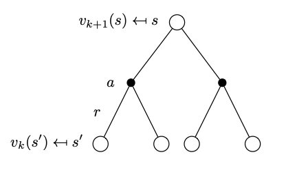

Policy Evaluation (Prediction)
Policy Evaluation (Prediction)¶
The policy \(\pi\) is evaluated when we have produced the state-value function \(v_\pi(s)\) for all states. In other words when we know the expected discounted returns that each state can offer us. To do so we apply the Bellman expectation backup equations repeatedly in an iterative fashion.
We start at \(k=0\) by initializing all state-value function (a vactor) to \(v_0(s)=0\). In each iteration \(k+1\) we start with the state value function of the previous iteration \(v_k(s)\) and apply the Bellman expectation backup as prescribed by the one step lookahead tree below that is decorated relative to what [we have seen]() with the iteration information. This is called the synchronous backup formulation as we are updating all the elements of the value function vector at the same time.
 Tree representation of the state-value function with one step look ahead across iterations.
The Bellman expectation backup is given by,
and in vector form,
The following source code is instructive and standalone. It executes the policy evaluation for the Gridworld environment from the many that are part of the Gym RL python library.
# this code is from https://becomesentient.com/mdp-dynamic-programming/
import numpy as np
import gym.spaces
from gridworld import GridworldEnv
env = GridworldEnv()
def policy_eval(policy, env, discount_factor=1.0, epsilon=0.00001):
"""
Evaluate a policy given an environment and a full description of the environment's dynamics.
Args:
policy: [S, A] shaped matrix representing the policy.
env: OpenAI env. env.P represents the transition probabilities of the environment.
env.P[s][a] is a list of transition tuples (prob, next_state, reward, done).
env.nS is a number of states in the environment.
env.nA is a number of actions in the environment.
theta: We stop evaluation once our value function change is less than theta for all states.
discount_factor: Gamma discount factor.
Returns:
Vector of length env.nS representing the value function.
"""
# Start with a random (all 0) value function
V_old = np.zeros(env.nS)
while True:
#new value function
V_new = np.zeros(env.nS)
#stopping condition
delta = 0
#loop over state space
for s in range(env.nS):
#To accumelate bellman expectation eqn
v_fn = 0
#get probability distribution over actions
action_probs = policy[s]
#loop over possible actions
for a in range(env.nA):
#get transitions
[(prob, next_state, reward, done)] = env.P[s][a]
#apply bellman expectatoin eqn
v_fn += action_probs[a] * (reward + discount_factor * V_old[next_state])
#get the biggest difference over state space
delta = max(delta, abs(v_fn - V_old[s]))
#update state-value
V_new[s] = v_fn
#the new value function
V_old = V_new
#if true value function
if(delta < epsilon):
break
return np.array(V_old)
random_policy = np.ones([env.nS, env.nA]) / env.nA
v = policy_eval(random_policy, env)
expected_v = np.array([0, -14, -20, -22, -14, -18, -20, -20, -20, -20, -18, -14, -22, -20, -14, 0])
np.testing.assert_array_almost_equal(v, expected_v, decimal=2)
print(v)
print(expected_v)